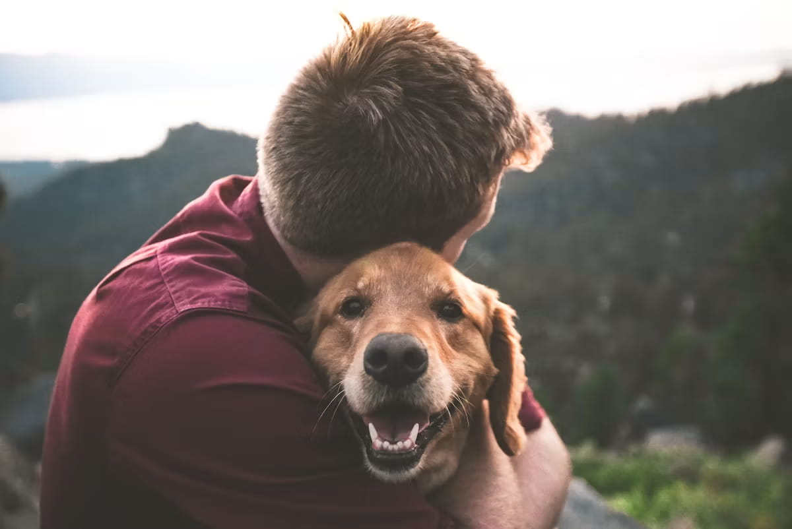

The Psychology of the Human-Dog Bond, Explained

"My dog loves me" isn't just something owners say to feel good. Researchers have actually studied it — using the same frameworks they use to study the bond between infants and their caregivers — and the overlap is a lot more literal than most people expect.
The "Strange Situation" test, applied to dogs
Researchers have adapted a classic developmental psychology paradigm — originally designed to assess infant-caregiver attachment — for dogs, observing how they behave when their owner leaves a room, when a stranger is present, and when the owner returns. Securely attached dogs, like securely attached infants, tend to explore more confidently when their owner is present, show distress when they leave, and seek proximity (not necessarily anxious clinginess) upon reunion — a pattern distinct from how the same dogs respond to a stranger's presence or absence.
The oxytocin loop
Mutual gazing between dogs and their owners has been shown in research to trigger a rise in oxytocin — often called the "bonding hormone" — in both the dog and the human, similar to what happens between parents and infants during eye contact. This appears to be a two-way physiological loop that reinforces the bond on both sides, which is a notably unusual finding across species and part of why some researchers describe the human-dog relationship as biologically distinct from other companion-animal relationships.
Why this happened between humans and dogs specifically
Dogs are believed to be the first domesticated species, with a shared history alongside humans spanning tens of thousands of years — long enough for genuine co-evolution of social and communicative behavior, not just training or exposure within a single lifetime. This depth of shared evolutionary history is one working explanation for why dogs read human gestures (like pointing) more readily than even our closest living relatives, chimpanzees, do.
What this means practically
Understanding attachment as a real, measurable bond — not just sentiment — reframes some common training advice. A securely attached dog, research suggests, tends to be more confident and resilient in new situations specifically because they have a reliable secure base to return to, not despite it. This lines up with why gentle, consistent, responsive care (rather than deliberately withholding affection to "avoid spoiling" a dog) tends to support better behavioral outcomes, not worse ones — a common but outdated concern that this research doesn't really support.
The bond changes, it doesn't just fade
The nature of attachment can shift across a dog's life — a securely bonded puppy and a securely bonded senior dog may express that security differently (a puppy's confident exploration versus an older dog's calm trust in a familiar routine) without the underlying bond weakening. See our guide to the Five Domains Model for how this "mental state" dimension fits into a broader picture of a dog's overall quality of life.